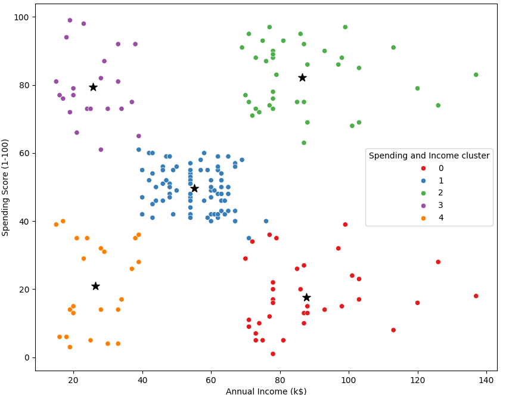

I help donors and international organizations across East Africa measure impact and make high-stakes decisions through rigorous statistical analysis and M&E systems.
With education background in Economics and Statistics as well as MEAL course, I specialize in evaluation of programs in Education, WASH, GBV, SRHR,Youth and Economic empowerment sectors
20+
Projects Delivered
6+
Years Experience
5+
Target Sectors
I provide high-level end-to -end evaluation, analytical, and research services generating credible evidence to inform policy, strategy, and investment decisions. The services are highlighted below.
Rigorous frameworks aligned with OECD-DAC standards to validate program performance and impact.
Advanced quantitative modeling to establish causal attribution in complex development settings.
Synthesizing KIIs, FGDs, and surveys to provide a 360-degree view of program outcomes.
Defining objectives and evaluation questions.
Sampling strategy, tool development and scripting.
Enumerator training, supervision, and data collection with real-time QA.
Data cleaning,coding,statistical analysis, and Statistical modeling.
Evidence synthesis, recommendations and dissemination.
Baseline, midline, endline, and impact evaluation reports aligned with donor standards.
Clean datasets with full documentation for transparency and reuse.
Interactive dashboards for monitoring and decision support.
Concise summaries tailored for policymakers and executives.
Theory of Change, logframes, and performance systems.
Stakeholder presentations and dissemination workshops.
Proven expertise across thematic development sectors.
Buni media contracted me to execute midline and endline evaluation of Wajibu wetu,tetea Phase 3 project which aimed at improving citizen knowledge on governance and women participation.The program used creative and participatory approaches to strengthen citizen engagement, women’s political participation, and youth media skills.The evaluation was carried out in 3 counties.
Designed mixed-methods tools, sampling frameworks, and field protocols; supervised data collection; and conducted rigorous quantitative and qualitative analysis. Triangulated survey data with project records and media analytics to assess outcomes, sustainability, and inclusion of women, youth, and persons with disabilities. Delivered evidence-based recommendations to guide future programming and scale-up.
Directed a longitudinal evaluation of a literacy and school feeding intervention targeting Grade 2–6 pupils. The study assessed impacts on attendance, learning outcomes, health, and wellbeing across schools in underserved communities.
The study used mixed-method approach and I led the full evaluation cycle from instrument design to reporting. Implemented Early Grade Reading Assessments (EGRA) to measure foundational literacy, student surveys to assess sanitation practices and wellbeing, and comprehensive school facility assessments covering WASH conditions and infrastructure adequacy. Conducted interviews with caregivers, teachers, and school administrators to capture household and institutional perspectives. Performed rigorous statistical analysis of literacy, attendance, nutrition, and environmental indicators, triangulating quantitative results with qualitative insights to generate credible evidence and actionable recommendations for program strengthening and scale-up.

Implemented K-means clustering to segment the customer base of mall clients based on demographic variables including age, gender, income, and expenditure patterns. The segmentation enabled tailored marketing strategies and optimized mall amenities for improved customer satisfaction and business growth.
Delivered actionable insights that aligned services with the distinctive preferences and behaviors of each customer segment, supporting targeted campaigns and strategic resource allocation.
“Abigael delivered a rigorous evaluation under tight timelines. Her insights directly shaped program redesign.”
Program Director — International NGO
“Exceptional analytical skills and stakeholder engagement. Highly recommended for complex multi-country studies.”
Research Lead — Development Consultancy
I am available for short-term technical assignments and long-term advisory roles.
Hi! 👋 Need help with M&E or Statistical Analysis? Chat with me on WhatsApp!
Chat Now